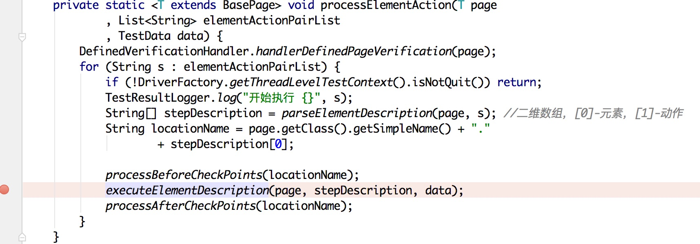
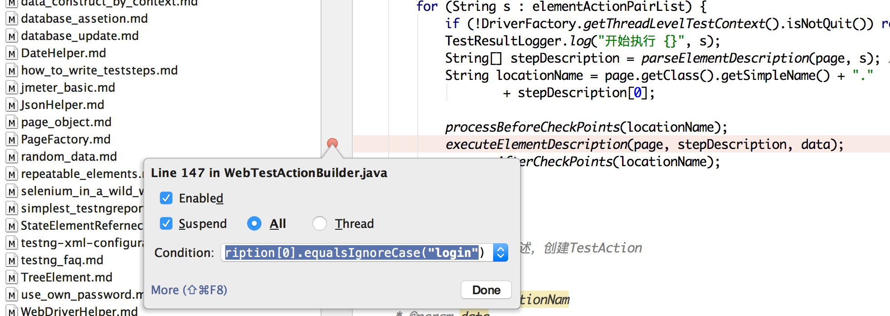
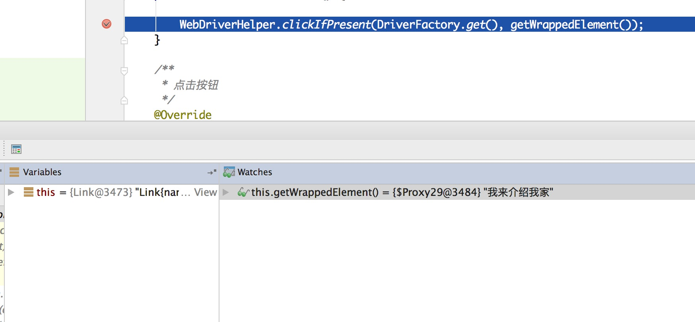
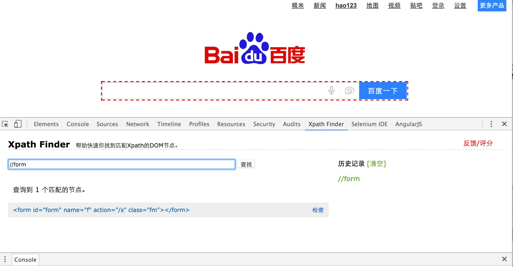

Web UI 自动化测试DEBUG
在使用目前框架的过程中,一旦遇到问题是就需要DEBUG, 一下是一些DEBUG的常用方法:
- 检查日志
- WebElement的调试
- 元素定位的调试
日志目前一般都打在Console中,如果出现错误,可以看看日志的提示,这个就不多讲了,这里主要讲的是如何调试在操作WebElement的时候 出错的情况.
操作WebElement的调试
操作WebElement的调试,主要调试的类是:
- WebTestActionBuilder 调试WebTestActionBuilder时候基本上只要在一个位置加断点就好了:  在这个地方加断点可以使用条件断点,右键点击断点的地方,加入条件就可以: 
条件可以使用如下的表达式:
stepDescription[0].equalsIgnoreCase("login")
那么这个时候会在元素名称是"login"的时候在这个断点停住
- 不同WebElement元素的 由于不同的页面元素使用不同的类或者方法,在WebTestActionBuilder断点生效之后,可以找到你出现问题的元素的类,以及他的方法 中设置断点,比如你出问题的元素是个Button种类,那么就到Button类里面相应的方法中打断点调试,如果是Button中没有你的想要的方法 那么多Button的父类HtmlElement中找相应的方法打断点. 在程序进入方法之后,就可以看Debug中的值,或者增加新的Watch来看需要观察的值 
元素定位的调试
元素定位另外的方法是使用插件: xpathfinder 